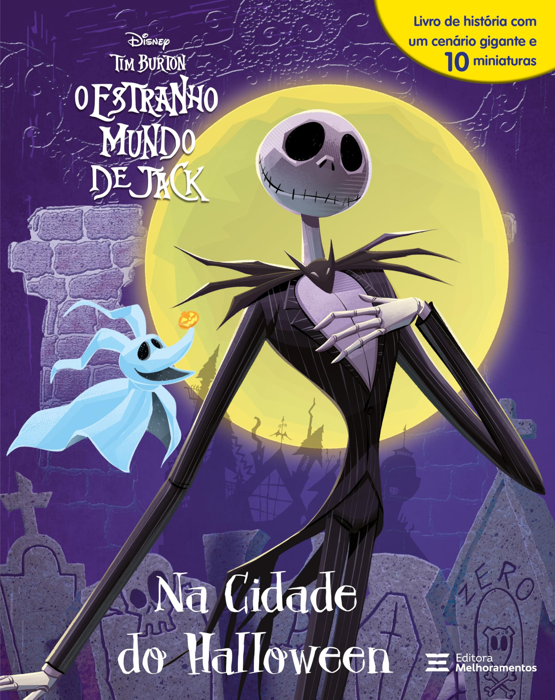
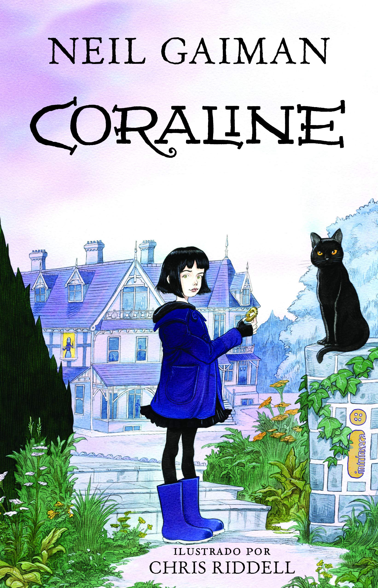
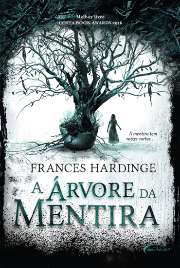
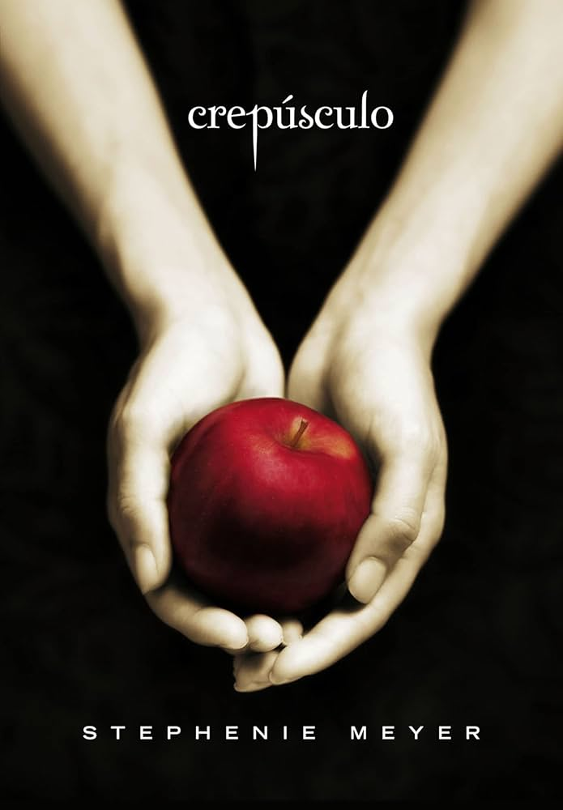
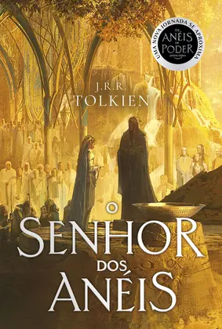
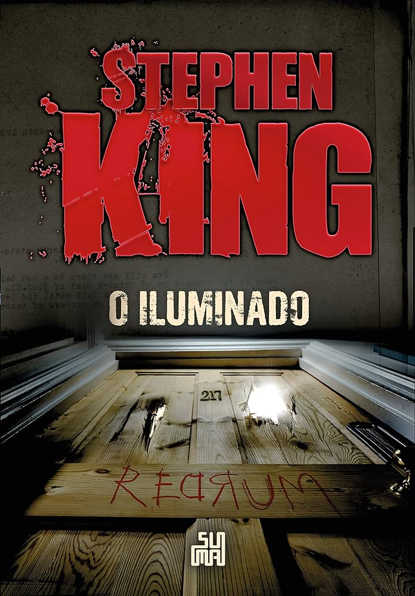
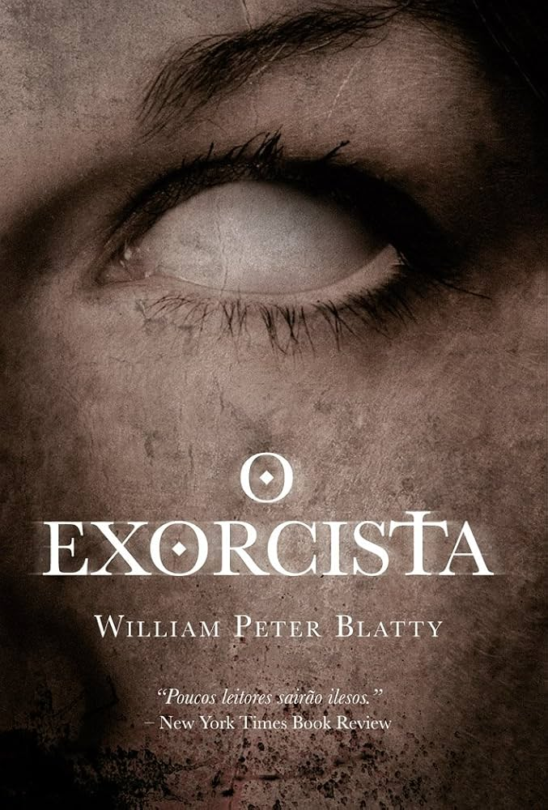
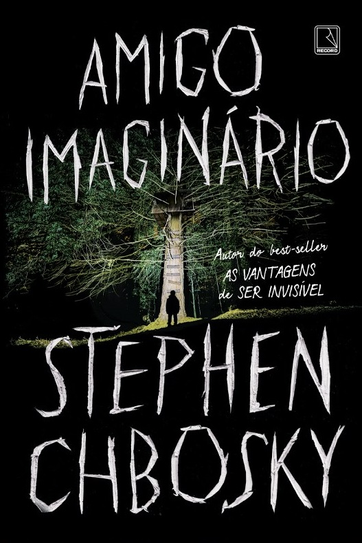
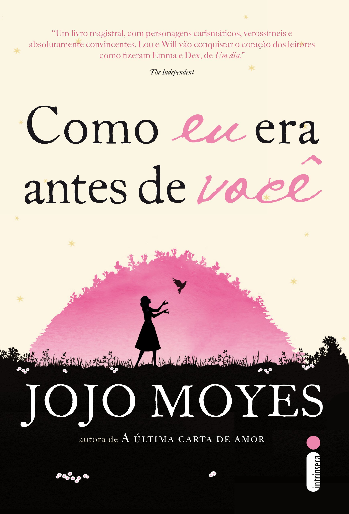

O Pequeno Príncipe é uma fábula filosófica e poética escrita por Antoine de Saint-Exupéry em 1943.
A obra conta a história de um piloto que sofre uma pane e cai no deserto do Saara,
onde conhece um menino loiro e misterioso que veio de um pequeno asteroide (o B-612).
R$ 38,90
⭐⭐⭐⭐⭐ (5/5)

O Estranho Mundo de Jack
Sally Morgan
A história de O Estranho Mundo de Jack (The Nightmare Before Christmas)
acompanha Jack Esqueleto, o amado Rei das Abóboras da Cidade do Halloween,
que fica entediado com a rotina de assustar pessoas. Ao encontrar portais para outras festividades,
ele descobre a Cidade do Natal e decide sequestrar o Papai Noel para assumir o seu lugar
R$ 79,90
⭐⭐⭐⭐⭐ (5/5)

Coraline
Neil Gaiman
Escrito por Neil Gaiman, Coraline acompanha uma menina curiosa
que se muda com os pais para um casarão antigo. Ao abrir uma porta
misteriosa, ela descobre um mundo paralelo onde vivem cópias dos seus
pais com botões negros no lugar dos olhos, que tentam prendê-la para sempre
R$ 54,90
⭐⭐⭐⭐⭐ (5/5)

A arvore da mentira
Frances Hardinge
A Árvore da Mentira (The Lie Tree), escrito pela premiada autora britânica
Frances Hardinge, é um romance que mistura ficção histórica,
mistério e realismo fantástico.
R$ 32,80
⭐⭐⭐⭐⭐ (5/5)
Populares
Harry Potter e a pedra filosofal
J.K. Roling
Harry Potter descobre aos 11 anos que é um bruxo.
Resgatado por Hagrid, ele vai para a Escola de Magia
e Bruxaria de Hogwarts, faz amizade com Rony e Hermione,
e impede que Lord Voldemort recupere sua forma física ao tentar
roubar a lendária Pedra Filosofal.
R$ 51,90
⭐⭐⭐⭐⭐ (5/5)

Crepúsculo
Stephenie Meyer
A história de Crepúsculo acompanha Bella Swan, uma adolescente que se muda
para a chuvosa cidade de Forks para viver com o pai. Ela se apaixona por Edward Cullen,
um colega de classe que é secretamente um vampiro. O romance enfrenta perigos quando
outros vampiros tentam caçar Bella, enquanto o amigo Jacob Black lidera um grupo de lobisomens
R$ 37,90
⭐⭐⭐⭐⭐ (5/5)

O senhor dos aneis
J.R.R Tolkien
A obra épica O Senhor dos Anéis, escrita por J.R.R. Tolkien,
é dividida em três volumes principais que contam a jornada
para destruir o Um Anel e derrotar o Senhor Sombrio Sauron na Terra-média.
R$ 64,90
⭐⭐⭐⭐⭐ (5/5)
As Crônicas de Nárnia
C.S. Lewis
As Crônicas de Nárnia é uma série de sete livros de fantasia escrita por C.S. Lewis,
publicada entre 1950 e 1956. A série segue as aventuras de crianças que entram no mundo mágico de Nárnia através de uma porta secreta em uma casa antiga.
Frances Hardinge, é um romance que mistura ficção histórica,
mistério e realismo fantástico.
R$ 42,90
⭐⭐⭐⭐⭐ (5/5)
Terror

O Iluminado
Stephen King
O Iluminado é um romance de terror psicológico escrito por Stephen King.
A história segue Danny Torrance, um menino com habilidades sobrenaturais,
que se muda para um hotel isolado onde enfrenta forças maléficas.
R$ 49,90
⭐⭐⭐⭐⭐ (5/5)
It a coisa
Stephen King
A história de It acompanha uma grupo de crianças em um pequeno vilarejo chamado Derry,
onde vivem com medo de uma entidade maléfica que se manifesta principalmente em forma de um palhaço.
para a chuvosa cidade de Forks para viver com o pai. Ela se apaixona por Edward Cullen,
um colega de classe que é secretamente um vampiro. O romance enfrenta perigos quando
outros vampiros tentam caçar Bella, enquanto o amigo Jacob Black lidera um grupo de lobisomens
R$ 37,90
⭐⭐⭐⭐⭐ (5/5)

O Exorcista
William Peter Blatty
O Exorcista é um romance de terror escrito por William Peter Blatty,
que conta a história de um menino possuído por uma entidade demoníaca.
R$ 59,90
⭐⭐⭐⭐⭐ (5/5)

Amigo imaginário
Stephen Chbosky
Amigo Imaginário é um romance de suspense psicológico escrito por Stephen Chbosky.
A história acompanha um menino chamado Christopher, que se muda para uma nova cidade
e cria um amigo imaginário chamado "Imaginary Friend". No entanto, à medida que a história se desenrola,
Christopher começa a perceber que seu amigo imaginário pode ter intenções sinistras e que há algo mais sombrio acontecendo em sua vida.
R$ 67,30
⭐⭐⭐⭐⭐ (5/5)
Romance
A culpa é das estrelas
John Green
A culpa é das estrelas é um romance de drama e romance escrito por John Green.
A história acompanha dois jovens amantes, Starr e Khalil, que enfrentam desafios em suas vidas.
R$ 39,90
⭐⭐⭐⭐⭐ (5/5)

Como eu era antes de Você
Jojo Moyes
Como Eu Era Antes de Você é um romance de drama e romance escrito por Jojo Moyes.
A história acompanha Louisa Clark, uma jovem que se torna cuidadora de Will Traynor,
um homem tetraplégico que perdeu a vontade de viver após um acidente. À medida que eles se conhecem,
desenvolvem uma conexão profunda, enfrentando desafios emocionais e questionando o significado da vida e do amor.
R$ 49,90
⭐⭐⭐⭐⭐ (5/5)
Orgulho e Preconceito
Jane Austen
Orgulho e Preconceito é um romance de drama e romance escrito por Jane Austen.
A história acompanha Elizabeth Bennet, uma jovem inteligente e independente, que enfrenta desafios sociais e amorosos em uma época em que o casamento era frequentemente visto como um meio de melhorar a posição social.
R$ 59,90
⭐⭐⭐⭐⭐ (5/5)
Para todos os garotos que já amei
Jenny Han
Para todos os garotos que já amei é um romance de drama e romance escrito por Jenny Han.
A história acompanha uma jovem chamada Mai, que se envolve em uma relação complicada com um garoto chamado Theo.